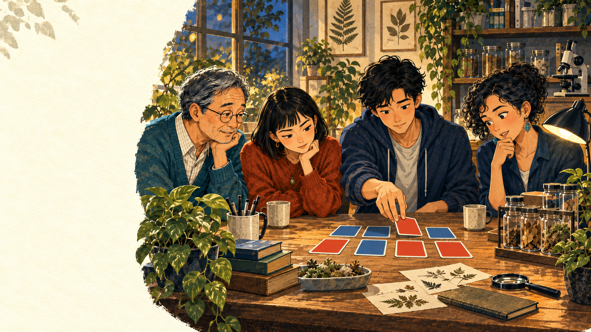

Julia Time / Case files
The Case of the Missing Fleas
● Connecting to the lab…

Part 2 of 3 · Check the notebook
Chapter 5 · What would plain chance give?
The notebook says 5 of 6. What would plain chance give?
The recheck cannot happen until someone looks at the jars again. Until then, remember why the notebook matters: if the springtails were dying out, most jars would have none. The notebook says 5 of 6 have springtails.
Momo: “Before we believe any story, let us see what plain chance gives.”
Before we use what we know about the jars, what would a plain 50:50 guess give? It is a starting guess, not what we expect: healthy jars would usually do better than 50:50. Under this guess, each jar is like a coin flip, with a half chance of still having springtails. How often would 5 or more of 6 jars show springtails just by chance?
Toto: “My cards can answer that. Draw, write it down, shuffle, repeat.”
Each card is one jar; teal means springtails.
Write Julia
Your editor
Use the named inputs shown above. This editor starts empty so the result can be yours.
Use these real names
What your Julia code can use
sim_counts- All 1,000 rounds' counts, one number for each round.
observed_count- The B09 count we saw (5). Compare every round's count with it.
events- Each run starts fresh, so the list of true-or-false values from Step 1 is gone, whatever you called it there. Make it again on the first line (one per round) and call it events.
sum(events)- Counts the true values: how many rounds matched.
length(events)- Counts every round.
This editor starts empty. Write your own Julia code.
⌘/Ctrl + Enter runs your code.
Stuck? Hints Small hints first, the full answer last. Your editor stays as you left it.
How the cards work optional
Toto's card game
One round: six cards, one for each jar
Teal means springtails and orange means none. Half the cards are teal. He writes down how many are teal, puts the cards back and shuffles. He played 1,000 rounds.
This is a what-if, not new jars. You may go straight to the Julia step.
Practise the .>= rule with six toy counts optional, different data
Different-data worked example, does not count for the case
Turn counts into a true-or-false event
Imagine six practice counts: practice_counts = [1, 4, 3, 5, 2, 4]. Ask which are at least practice_target = 3.
practice_counts .>= practice_target
The dot says: compare every count with the target. Julia returns one true-or-false result for each practice count. These values are different from the Missing Fleas case, so this shows the code shape without answering the case.
Practice only, does not count for the case. Next, inspect the named case inputs before you write your own Julia.
Try one round yourself (optional) does not count for the case
Try one round yourself (optional)
Toto’s six-card round
Toto draws six cards, one for each jar. Teal means springtails. Does this round have 5 or more teal?
Practice rounds: they can come out a little differently from Toto’s 1,000.
Guess first if you like. Your prediction stays on this page.
Optional: show more rounds does not count for the case
Optional: put the code pieces in order first practice only
Choose the line that comes first, then choose the next, until every piece is placed. This rehearsal uses placeholders, does not run Julia, does not count for the case, and does not write into your editor.
Choose the first piece.